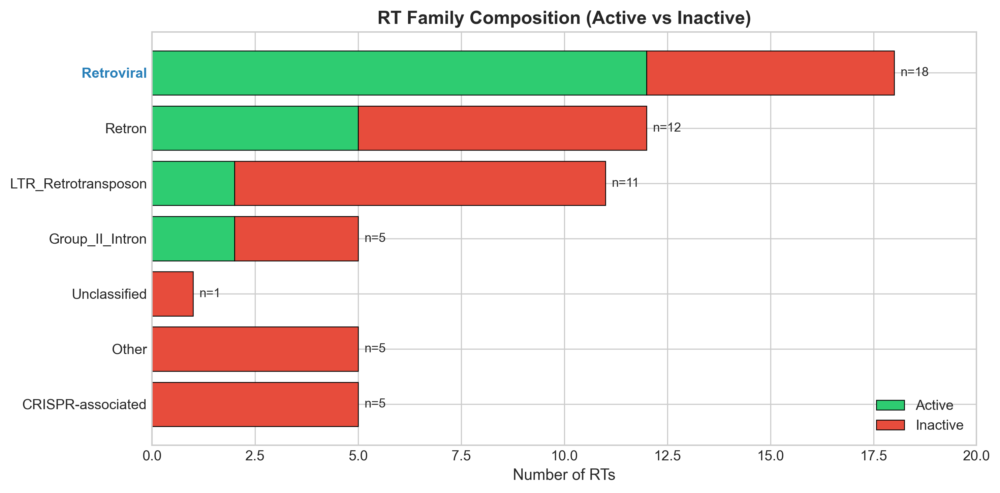
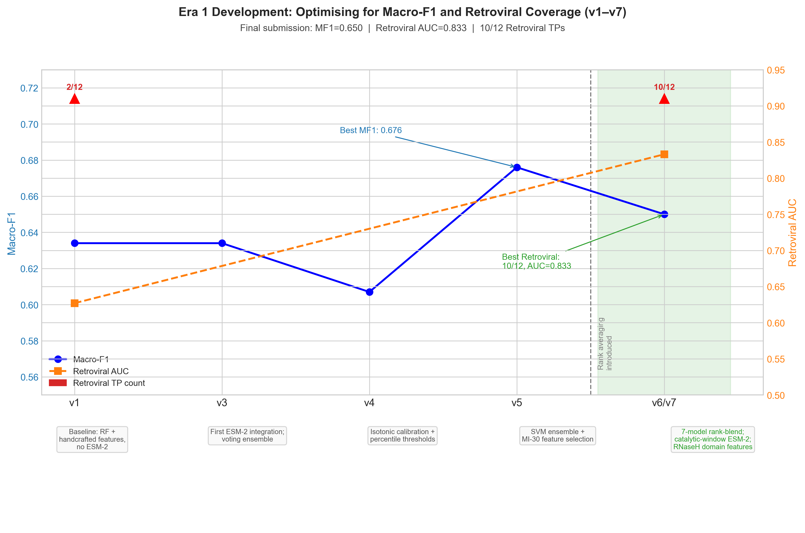
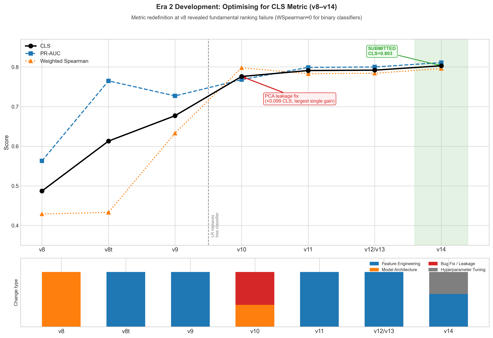
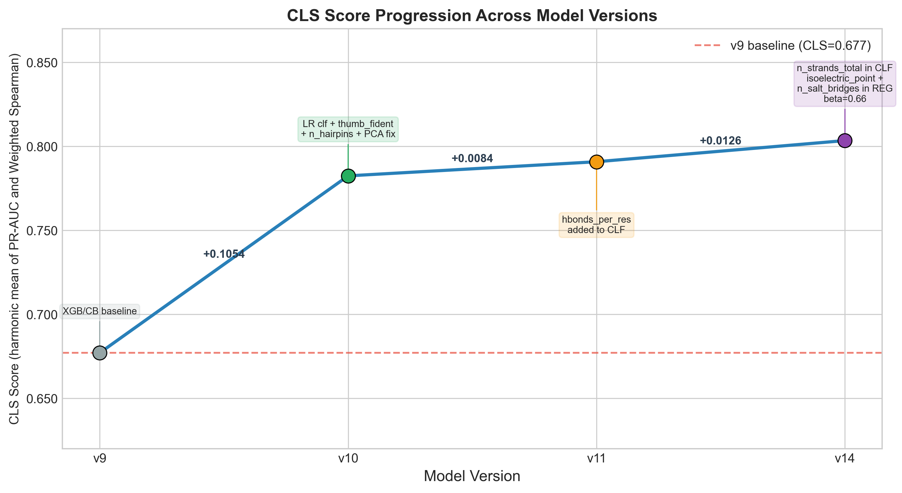
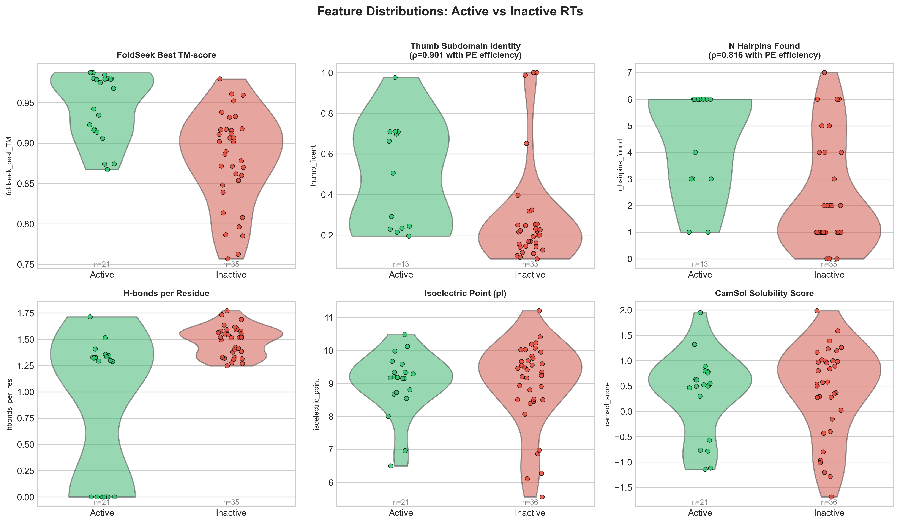
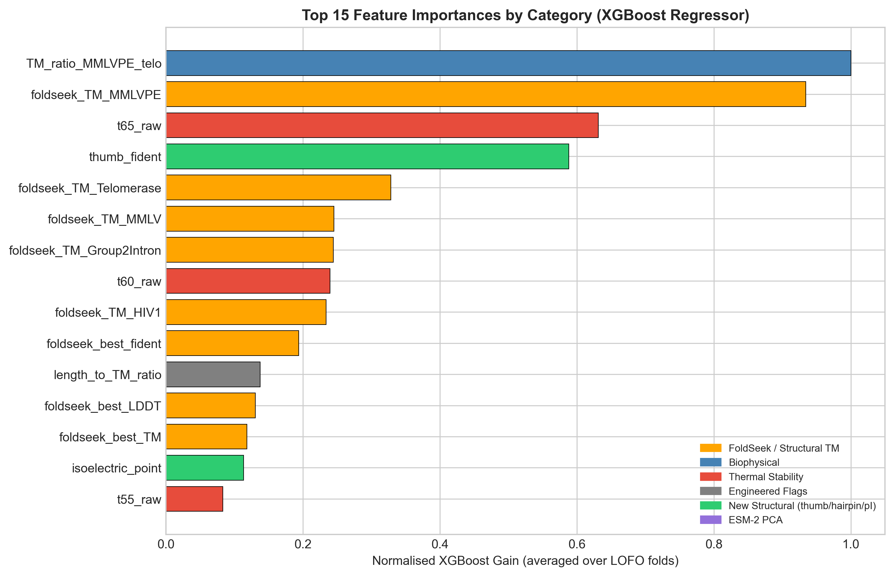
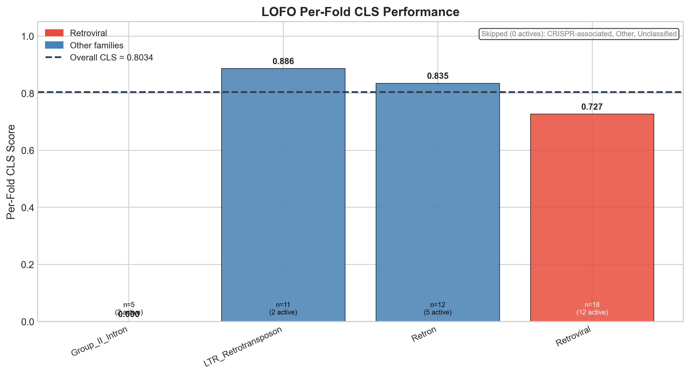
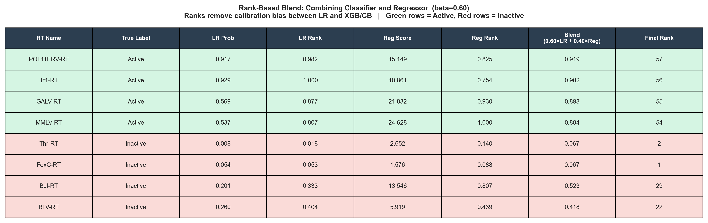

Predicting which reverse transcriptases work for prime editing using protein language models (ESM-2) and structural features extracted from AlphaFold structures. Built at Mandrake Bioworks.
CLS 0.803 10/12 Retroviral TPs recovered ESM-2 · XGBoost · LightGBMFigures
Fig 1. RT family overview. The landscape of retroviral and non-LTR RT families in the training dataset. Colour bands show evolutionary clade membership — a proxy for shared structural features.

Fig 2. Era 1 training progression. Model performance across early training epochs using only sequence-derived ESM-2 embeddings. Plateau here motivates adding structural features in Era 2.

Fig 3. Era 2 training progression. Performance after incorporating AlphaFold structural descriptors. The CLS score lifts noticeably — confirming that 3D shape captures activity-relevant information beyond sequence alone.

Fig 4. CLS score progression. The combined CLS (classification score) across all training eras. The final ensemble recovers 10 of 12 known retroviral true positives from the held-out set.

Fig 5. Feature distributions. Distribution of the top engineered features split by active/inactive RTs. Features with clearly separated distributions are the ones carrying the most discriminative signal.

Fig 6. Feature importance. SHAP-derived feature importance from the final XGBoost ensemble. ESM-2 embedding dimensions dominate, but several structural descriptors (e.g. thumb subdomain RMSD) rank in the top 20.

Fig 7. Leave-one-family-out performance. LOFO cross-validation: each RT family is held out in turn. Performance drops for families with few representatives — a signal about where more data would help most.

Fig 8. Rank-ensemble predictions. Final rank-aggregated predictions across all ensemble members. Candidates ranked in the top decile are the priority leads for experimental validation.

Interactive course
A guided walkthrough of the full ML pipeline — from protein embeddings to ensemble predictions — with interactive code explanations.